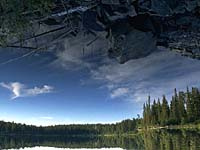
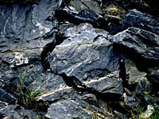

|
|
"Environmentally Sensitive Area". Please be careful where you walk and try not to disturb the natural environment. For additional information please contact Tourism Saskatchewan. | ||
Canadian Shield | |||
| GPS: | 55d 04.86m N | 102d 52.34m W | 1498 feet |
| Location: | 20 kms south of Pelican Narrows. | ||
| The oldest rocks in Saskatchewan are those of the Precambrian or Canadian Shield. They are mainly igneous in origin with metamorphosed volcanic, plutonic and sedimentary rocks present. These rocks, which were formed 3.6 to 1.8 billion years ago, underlie all of Saskatchewan, but are at or near surface only in the northern part of the province. | |||
| GPS: 55d 04.86m N, 102d 52.34m W, 1498 feet
15 July 96, 1:05 pm, Fuji Velvia 50, F11 1/30s | |||
 The image to the left has not been digitally manipulated. Try to figure what is going on. | |||
The Canadian Shield, also called the Precambrian Shield or the Laurentian Plateau, is a vast horseshoe-shaped area covering eastern and central Canada, and a small part of the northern United States. One half of Canada's area is occupied by the Canadian Shield. In Saskatchewan, the region is full of clear lakes, glacially-sculpted. | |||
The rocks here are hard and crystalline. Over much of the region, bedrock is exposed or covered by relatively thin soil. A large number of metallic minerals including gold, zinc, copper, lead, platinum, sliver and uranium can be found in these ancient rocks. | |||
The shield rocks are the roots of ancient mountains which were formed through the collision of continents. | |||

The mountain building which consisted of folding, uplifting of pre-existing sedimentary and volcanic rock ended about 1.76 billion years ago and, over the next 100 million years or so, the mountain belt was eroded to become a low relief area of a new continental mass formed by the collision. | |||
The collision of continental plates from the southeast and northwest (relative to present-day Saskatchewan) imparted a fabric perpendicular to the force of the continental collision, namely northeast-southwest. This is also the predominant orientation of the most recent glacial advance and retreat. | |||
Topographic relief is generally low, but many of the lakes and intervening bedrock ridges in the region are elongated about a northeast-southwest axis, a reflection of bedrock geology. | |||
Due to the effect of the most recent ice age, the Canadian Shield has very thin soil with rocky outcroppings frequently showing. It is mainly undulating land with small hills and with numerous lakes. It is unsuitable for farming, but large parts in the south have forests and mining is also fairly common. | |||
Very large deposits of peat may be found in this region. It is suitable for use as fuel and other industrial applications. Only sphagnum peat, for horticultural use, is presently produced. | |||

The peatlands in the region west of the La Ronge-Montreal Lake region contain a large proportion of well-humified sedge fuel peat generally with a sphagnum cover. The fuel peat potential is also very large in the La Ronge area. | |||

Northern Saskatchewan contains some of the world's richest deposits of uranium. Open pit mines at Cluff Lake, Key Lake and Rabbit Lake extract ore from very rich, shallow ore deposits. The underground mine at Cluff Lake extracts ore form a deeper ore body. | |||

The are of the province where most of the uranium deposits can be found is called Athabasca Basin. Here, the precambrian rocks were broken down by weathering and erosion, billions of years ago. Some uranium was dissolved by surface and groundwater and the dissolved uranium was carried into continental basins. These are low places on terrain where an inland sea formed and sediments were deposited. | |||
Some of the uranium precipitated out of the water and became concentrated in sedimentary rocks of the basin. The swirling water in other places concentrated the uranium so much that ore bodies formed. | |||
 The entire process took place over millions of years. Today, we mine these minerals from the great Precambrian Shield. We thank Saskatchewan Energy and MInes for some of the above information. | |||